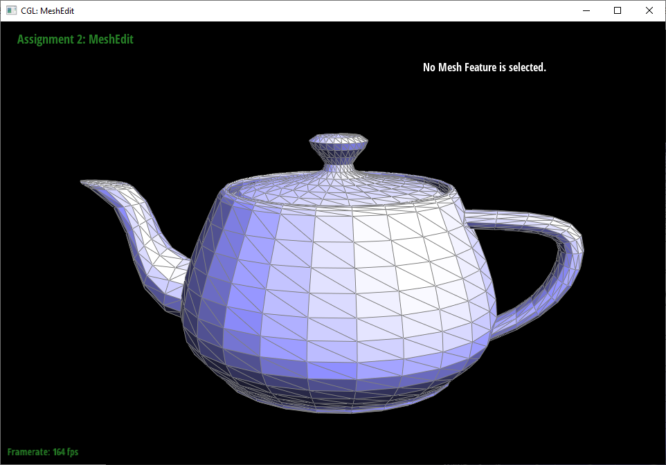
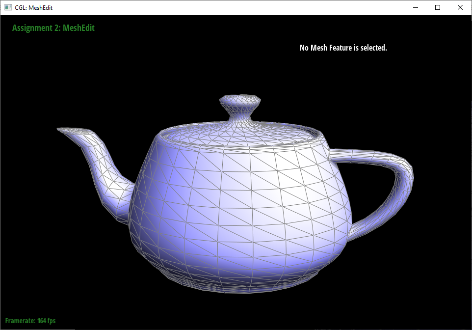

In this project, we learned how to fundamentals of meshes and how to do operations such as flipping an edge, splitting an edge, and loop subdivision for upsampling on a Halfedge mesh. In the first section of the project, we used de Casteljau's algorithm to implement Bezier curves and surfaces. Next, we implemented area-weighted normal vectors for vertices to enable Phong shading on meshes. Lastly, we implemented the mesh operations flip edge, split edge, and loop subdivsiion, which uses both flip and split edge, through our Halfedge mesh data structures to reassign pointers or create new mesh elements.
de Casteljau's algorithm works by using linear interpolation to iteratively reduce the number of points until we reach a final point. As our variable t, which controls the linear interpolation, increases from 0 to 1, this final point will then trace out the bezier curve we want from the control points. For part 1, we implemented a single step for the 1D de Casteljau which we will call later to make curves and surfaces.
In part 2, we implemented the three functions evaluateStep, evaluate1D, and evaluate. Starting with evaluateStep, it's function is the same as the one we wrote in part 1, but now this time called by a BezierPatch. Next, we implemented evaluate1D, which calls evaluateStep to perform the 1D de Casteljau operation, which calls evaluateStep as many times as needed until we get a single final control point for a parameter t given a vector of control points. Lastly, we implemented evaluate to first obtain the control points on the u plane by calling evaluate1D on each row of control points with parameter u as our t. We then call evaulate1D on these control points using v as our t to finally obtain the final point on this Bezier patch given u, v.
To calculate the area-weighted unit normal vector at a vertex, we have to use mesh traversal to get the three vertices for each face that this vertex is in. With the position of each vertex, we can make two different vectors that run along this face, then we take their cross product to get the normal vector. The area of the face is easily calculated by taking the magnitude of our normal vector and halving it. To weigh the normal by its area, we first normalize the vector and then multiply it by the area. To find the area-weighted unit normal at the vertex, we add up all the normal vectors from the faces and then normalize it.
|  |  |
To implement edge splitting, we found it really useful to clearly draw out a diagram of the before and after so we can clearly map how each element changes. We have to create a new vertex (which gets returned), 2 new faces, 3 new edge elements, and 6 new halfedges. We used setNeighbors for each of the relevant halfedges to assign all of its pointers, and also reassigned the appropriate halfedge for the other elements, original and new.
Debugging edge split took a lot of careful code review. First, everytime our edge split we had our new vertex in the right location but the upper two faces were missing. The first mistake we found was that we assigned a wrong vertex pointer to a halfedge. However, fixing that still didn't solve the two missing faces. We then discovered that the two missing faces were the original faces and we forgot to reassign their halfedge pointers. After fixing that, our edge split worked.